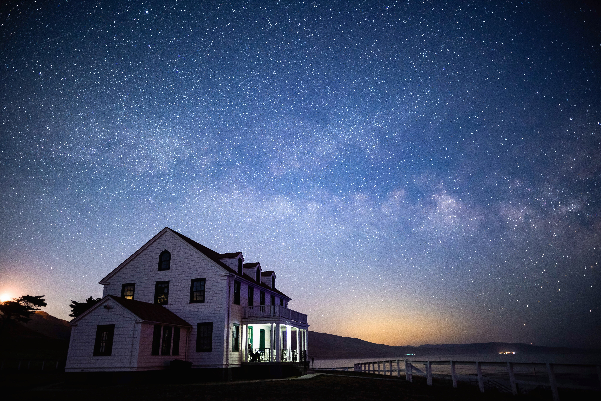

[ Astrophotography ]
When possible, I dabble in astrophotography. I love searching for dark skies and capturing the milky way in all its glory. I haven't been able to get out at all lately, but I'll get back to it for Summer 2021. If you'd like any of these in full-res for a wallpaper or print right-click on the image and download the full size! Star photos looks excellent printed on metallic paper. I always love knowing when someone gets one printed, so let me know how it turned out if you do!


